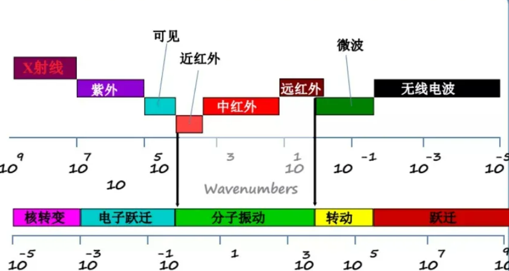
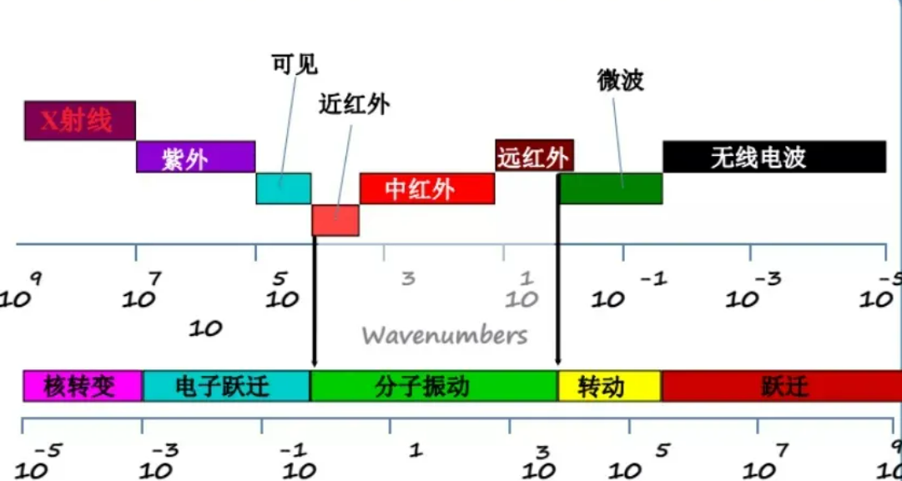

- 1.壳寡糖比壳聚糖具备更优良的活性
- 2.壳寡糖在食品配料和保鲜、医药研发、农业应用等领域有极大的应用价值
- 3.壳寡糖有免疫刺激的功能
Design
降解壳聚糖的方法选择
酸解法
优点：工艺成熟
局限：产物中单糖较多，COS较少；盐酸消耗量大；反应条件苛刻； 后处理繁琐；造成环境污染
生物酶法
优点：反应条件温和、产率高、选择性好、可控性强、对环境有益
局限：聚合度（DP）影响COS的生物活性，故对酶的来源、酶学性质要求苛刻
确定目的基因来源
采用来源:解淀粉芽孢杆菌的壳聚糖酶

- 1.酶活性高——（酶活/(U/mg)2380.50
- 2.酶稳定——30~45 ℃范围内孵育30 min后相对酶活性稳定在85%以上
确定导入载体
选用乳酸杆菌

- 1.壳聚糖可上调肠道菌群中乳酸杆菌丰度
- 2.壳聚糖促进乳酸杆菌的体外生长
- 3.乳酸杆菌是肠道有益菌，可以分解利用机体所不能降解的物质，并通过对淋巴细胞的影响，调节机体免疫。
易错PCR
采用易错聚合酶链式反应（error-prone polymerase chain reaction，epPCR）的方法突变出耐热性更强，壳活力更高的壳聚糖酶用于实验）
分子生物学38：什么是反向pcr？
1.易错PCR：指通过改变PCR反应条件来调整PCR反应中的突变频率，降低聚合酶固有的突变序列的倾向性，提高突变谱的多样性，使得错误碱基随机地以一定的频率掺入到扩增的基因中，从而得到随机突变的DNA群体，最后用合适的载体克隆突变基因的方法。
1.1 易错 PCR是在采用DNA聚合酶进行目的基因扩增时，通过调整反应条件，如提高镁离子浓度、加入锰离子、改变体系中四种的dNTPs浓度或运用低保真度DNA聚合酶等，来改变扩增过程中的突变频率，从而以一定的频率向目的基因中随机引入突变，获得蛋白质分子的随机突变体。其关键在于对合适突变频率的选择，突变频率太高会导致绝大多数突变为有害突变，无法筛选到有益突变;突变频率太低则会导致文库中全是野生型群体。理想的碱基置换率和易错的最佳条件主要依赖于突变的DNA片段的长度。
1.2 对蛋白质分子的了解程度不同，酶分子改造通常可以通过理性设计、非理性设计、半理性设计或从头设计等策略来完成。对于空间结构了解较少的酶蛋白，采用理性设计的改造风险较大。针对这种情况,酶的非理性设计策略应运而生。酶的非理性设计又称为定向进化,即在不需明确酶蛋白的结构信息和催化机制的情况下,通过模拟自然进化中出现的随机突变、重组等进化机制,并在后期筛选中定向施压,便可在短时间内获得具有某些特定优秀性能的突变体。
1.3 易错PCR的基本原理：是非理性设计中的经典方法,其原理是运用普通TaqDNA聚合酶保真度低且不具备3'→5’端的外切酶活性,因此其在扩增过程中会不可避免地产生少量碱基错配且不能自行纠正。在整个扩增体系中人为改变一些因素,如改变DNA聚合酶激活剂Mg2+浓度或者添加Mn2+的时候,可进一步提高错配率。易错PCR在扩增过程中引入的错配的位置是随机的，所以理论上在酶蛋白的任何部位都可能出现氨基酸残基的变化,而错配产生的数量也可以通过改变PCR条件来控制,因此易错PCR被认为是一种简单易行的随机突变产生方法。
1.4 影响易错PCR效果的关键因素：影响易错PCR效果的因素主要有所选DNA聚合酶的保真度、体系中Mg2+浓度及Mn2+浓度、四种dNTP比例以及PCR反应的循环数等。在PCR过程中,Mg2+作为Taq DNA聚合酶的金属辅因子而对其具有功能激活作用,Mg2+的浓度直接影响DNA聚合酶活性。适当浓度的Mg2+维持Taq DNA聚合酶的正常聚合酶活性,通常PCR添加的Mg2+浓度在1.5~2mM左右,Mg2+浓度提高,DNA聚合酶的扩增效率也随之提高,但浓度过高则会降低PCR产物的特异性。
选择CRISPR-Cas9
 

对目的基因进行高效地片段插入、删除和替换
选择质谱法或红外检测法
是不需标记的高通量筛选方法，灵敏度高，特异性强
突变文库制备
易错PCR
采用易错聚合酶链式反应（error-prone polymerase chain reaction，epPCR）的方法突变出耐热性更强，壳活力更高的壳聚糖酶用于实验）
将目的基因与载体连接
转化
连接产物转化至乳酸杆菌感受态细胞
菌株诱导表达蛋白
克隆子37℃培养
采用易错聚合酶链式反应（error-prone polymerase chain reaction，epPCR）的方法突变出耐热性更强，壳活力更高的壳聚糖酶用于实验）
诱导蛋白表达
酶表达检测
重组菌破裂
重组菌破裂 采用易错聚合酶链式反应（error-prone polymerase chain reaction，epPCR）的方法突变出耐热性更强，壳活力更高的壳聚糖酶用于实验）
离心取上清液
采用易错聚合酶链式反应（error-prone polymerase chain reaction，epPCR）的方法突变出耐热性更强，壳活力更高的壳聚糖酶用于实验）
酶活性检测
筛选
利用选择性培养基筛选降解壳聚糖活性高的含壳聚糖酶基因的乳酸杆菌突变体